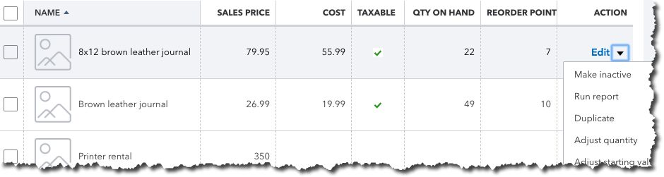

QuickBooks Online is more than just an online bookkeeper. It can help improve your cash flow, your customer relationships, your inventory readiness, and your future.
If you’re already using QuickBooks Online, you know how much impact its bookkeeping abilities have had on your company’s accounting operations. You’re saving time, which in-turn saves money, and you’re reducing errors. When a customer or vendor calls with a question, or you yourself need to track down a critical detail to solve a problem, you’re able to find solutions quickly.
You may already have learned, though, that QuickBooks Online’s benefits include much more than simply getting the numbers right. When you take advantage of all it can offer, you’re likely to notice more far-reaching effects.
Let’s look at how QuickBooks Online accomplishes all of this. You can do much of it on your own, but we’re trained to help small businesses get the most out of QuickBooks Online. We can help you maximize the effectiveness of your accounting time so your company can:
QuickBooks Online provides quick, real-time overviews of your sales status.
You can’t begin to improve your company’s cash flow until you understand where the financial bottlenecks are. QuickBooks Online provides that information for both income and expenses in a variety of ways. In the image above, you can see that there are seven past-due invoices. Click on the orange bar to see a list of them, and you can automatically send reminders. QuickBooks Online also automates the process of sending statements.
You can also run accounts receivable and accounts payable reports that will show where you stand with customers and vendors, like Open Invoices, Uninvoiced Time, Unpaid Bills, and Accounts Payable Aging Detail. If you determine that one of your consistent problems with cash flow is late customer payments, you can set up a merchant account through QuickBooks Online to support credit card payments and bank transfers.
Your customers are like gold. To build the best relationships possible with them, you need a clear, updated picture of their transactions, their payment details and history, and your interaction with them. QuickBooks Online provides templates for Customer Information records that provide all of that, along with their contact information and a real-time update of the status of their invoices and payments, estimates, time activities, etc. The latter is provided in the form of an interactive list with links to immediate actions you can take.
If your business sells products, you know that you have to be smart about inventory levels. Stock too much and you have too much money tied up unnecessarily. Too little, and you’ll be turning customers away and possibly losing their future business. QuickBooks Online’s inventory-tracking tools help you achieve and maintain that balance, so you know both when and how much to reorder.
It’s easy to evaluate your inventory status very quickly in QuickBooks Online.
QuickBooks Online also offers multiple inventory reports, like Inventory Valuation Detail, Physical Inventory Worksheet, and Sales by Product/Service Detail.
You may never want to acquire another company, or move into more spacious offices, or employ dozens of individuals. However, it’s not often that a company doesn’t want to be in a position to grow. And you never know when an opportunity will present itself that would require additional capital. Would you be ready?
If you’ve never applied for a business loan or tried to attract investors, you don’t know how much financial information you’ll need to provide, or in what format. There are very specific reports your potential lenders or investors will want to see, standard financial statements. QuickBooks Online includes templates for these, which include a Balance Sheet, Profit and Loss, and Statement of Cash Flows.
Like the reports we mentioned earlier, they’re easy to generate on the site, thanks to intelligent, customizable templates. Analyzing them, though, and making sure they’re ready to be seen by third-parties takes professional expertise. We can provide that for you. We can also help you better understand and use other elements of QuickBooks Online so that you’re taking advantage of all of its benefits. Contact us soon to set up an initial consultation.
Cash flow problems? Before you can solve them, you need to learn where the bottlenecks are. QuickBooks Online can help. Contact us to find out how.
Is your company ready to grow? You’ll need reports to show lenders and investors. QuickBooks Online can create them, and we can analyze them for you.
How well do you know your customers? Could you assemble a quick, thorough overview of their history with you? QuickBooks Online can, and we can show you how. Are you dealing with product inventory problems due to overstocks or insufficient orders from vendors? QuickBooks Online can help.